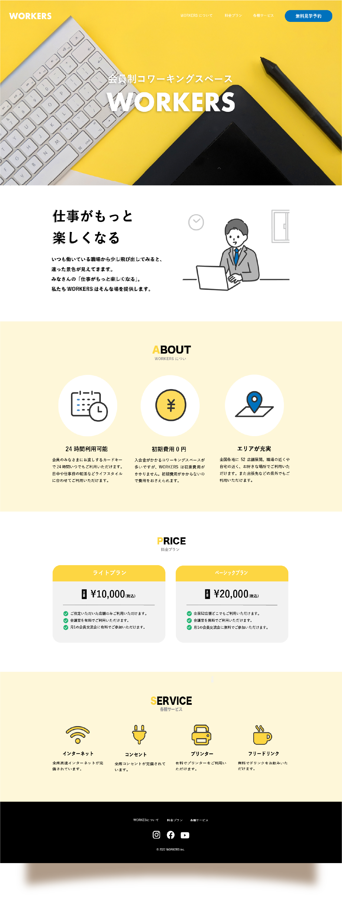
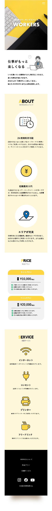
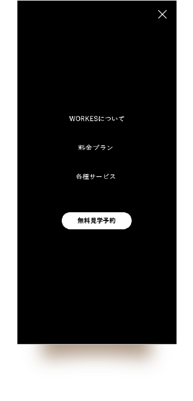

WORKS

- WORKERS -
会員制コワーキングスペースのブランドサイト

WEBサイト スクール課題
- 全体デザイン
-
 
- 概要
- 架空の美容室「LIFE」のWebサイトデザインを制作。
“自分らしさを大切にする”というブランドコンセプトをもとに、
ナチュラルでやさしい世界観を表現しました。 全体を通して、
淡いパステルカラーと十分な余白を活かし、落ち着きと清潔感のある印象に仕上げています。 - 目的
- 美容室の魅力やコンセプトを視覚的に伝え、ターゲットユーザーに安心感と親しみを持ってもらうこと。
Webサイトを通じて、来店や予約につながるきっかけをつくることを目的としています。 - ターゲット
- 20〜40代の女性を中心とした、美容室選びにこだわりのある層。
ナチュラルな雰囲気や丁寧な接客を重視するユーザーを想定。 - 制作期間
- 約5日
- 使用ツール
- Adobe Illustrator / Photoshop / Adobe Stock